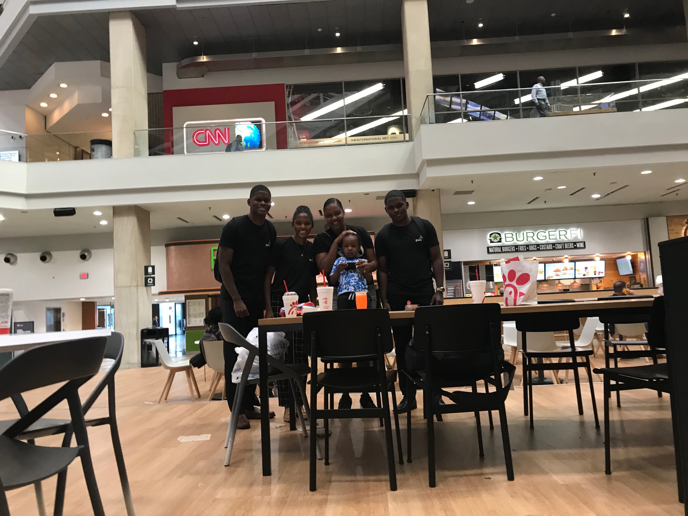
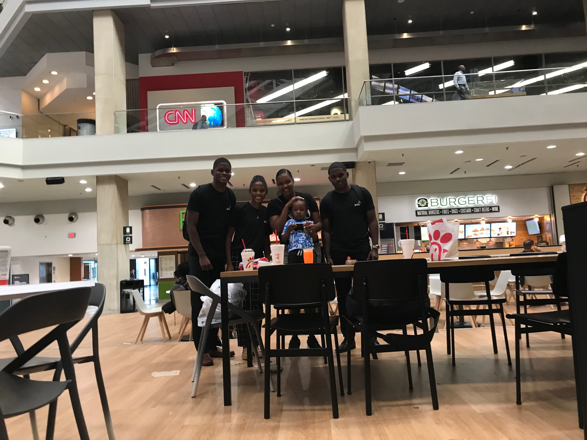
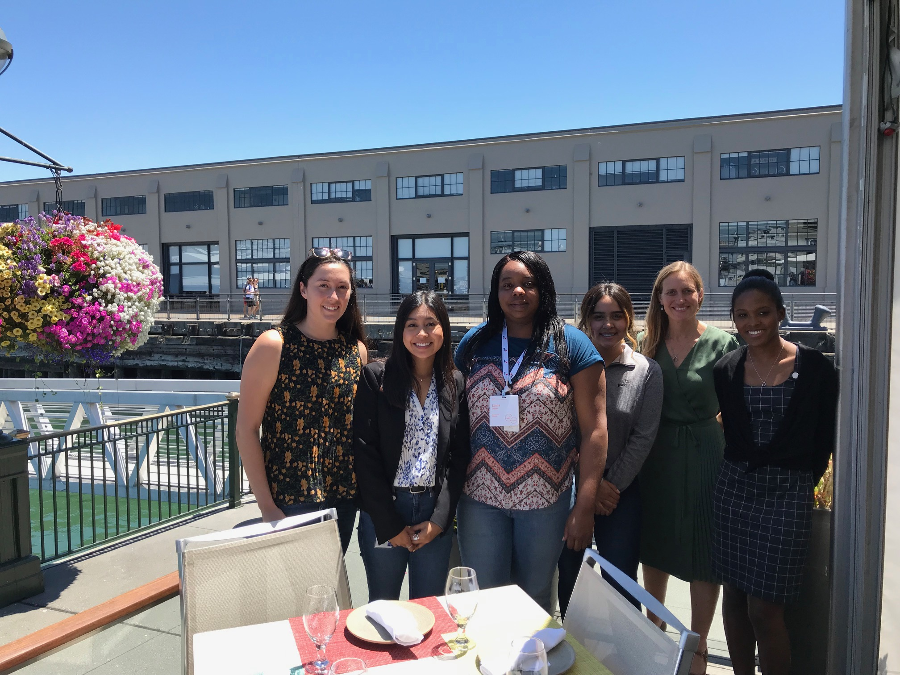
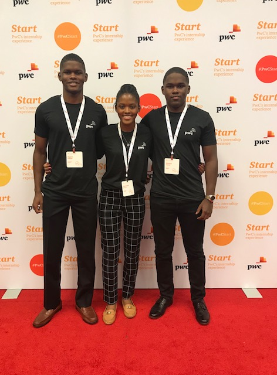
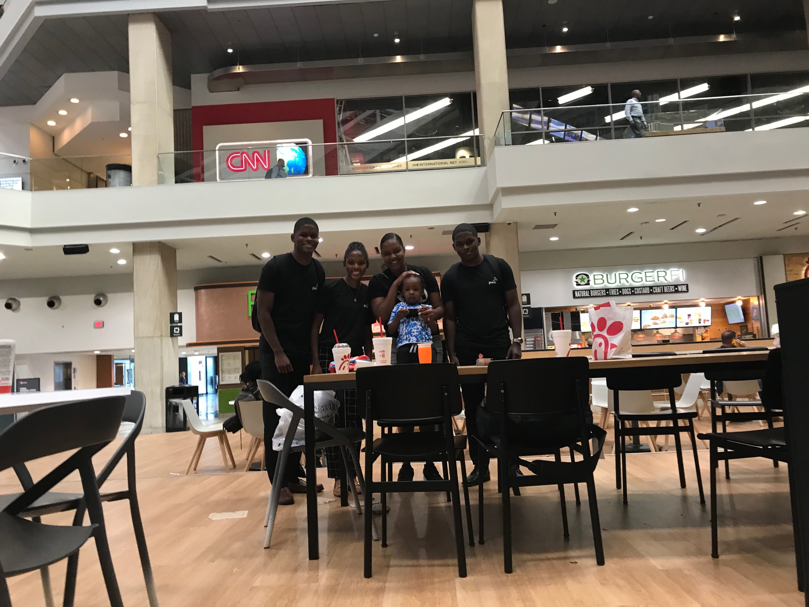
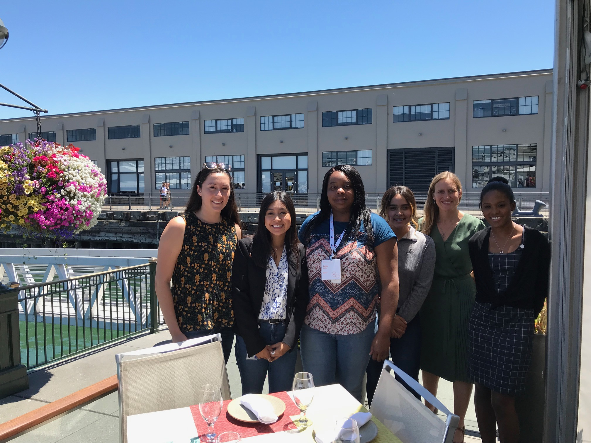
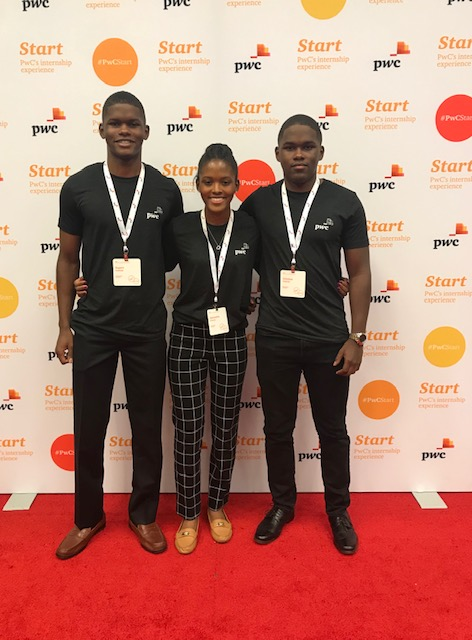

Alexandria Dusauzay
I am a versatile worker able to take on any required task and adapt to changing conditions with a hard working mindset. I am dedicated to business success, eager to learn more about accounting and finance skills and to advance professionally.
This past summer I had the opportunity to intern at Pricewaterhouse as a Start Intern and will be going back this summer to work as an Assurance Intern. During my time interning over the summer, I learned a lot about the culture of the firm and how it operates. I had the opportunity to attend national training in Atlanta, Georgia with all the other Start Interns across the nation. Each day we had a day full of motivational activities and small group activities where we learned more about the technical side of things at PwC. I met so many other interns, associates, and partners from all over the country. The first day we had Kickstart Training where we just got our PwC laptops set up. Also, an assurance partner talked to us about her experience as a partner and her journey getting to that position. Later that day, Start National Training started which lasted until Thursday afternoon. We learned things from the different lines of service PwC offers to developing our personal brand. Other concepts we discussed were expanding our network, understanding the firm and communicating effectively. In our leisure time we went to the Atlanta Aquarium and had some great dinner and dancing. My favorite aspect of the Start National Training was that they made it very entertaining and were really focused on the concept of diversifying relationships and PwC as a whole. My favorite concept PwC takes on is called Be Well, Work Well. They had rooms and activities all dedicated to Be Well, Work Well. This included silent discos, a lot of food, music, and improving our personal brand. Overall, Start National Training was very fun and I met many people that I will definitely connect with in the future.
After national training I worked in the San Francisco office and got to talk to partners about their experience at PwC. They offered guidance and support throughout the internship, which was really nice. Along, with talking to partners we had a group project we worked on. A client had us analyze data they had and answer some questions they had. We used a program called Alteryx to analyze the data sent to us and then used another program called Tableau to present the data and answer the questions asked of us. The last week of the internship we presented the project to a partner and that was a really fun experience.
I am also a part of a nonprofit organization back home called The Street Smarts, founded by Michael Campbell. We are dedicated to creating opportunities for students from traditionally underserved groups to gain experience and learn about the world of finance. The Street Smarts is the organization that helped me get an internship at Pwc and I will forever be grateful towards Michael and the organization
Experience
Accountant
• Intern at PricewaterhouseCoppers
• Assurance practice
• Experience with Alteryx and Tableau
Volunteer
•Cleaned and collected wheelchairs
•Helped transport patients and assisted with discharges
•Communicated extensively with patients to provide assistance, support and instructions
•Inform families of where a patient was staying in the hospital
Team Member
•Balanced the needs of multiple customers simultaneously in a fast-paced environment
•Maintained visually appealing and effective displays for the entire store
•Recommended and helped customers select products based on their needs
•Processed all sales transactions accurately and in a timely fashion
Education
UC Riverside
Portfolio
.JPG) 




 